Name [2 pts]: Key Math 349: Linear Algebra
Exam 3 Solutions
3 May 2001
We might try our lives by a thousand simple tests; as, for
instance, that the same sun which ripens my beans illumines at once a
system of earths like ours. If I had remembered this it would have
prevented some mistakes.
- from ``Walden'' by Henry David Thoreau
Instructions: Show all work to receive full or partial credit. All University rules and guidelines for student conduct are applicable.
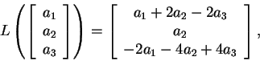
The range of L is the column space of the matrix representation.
Thus,
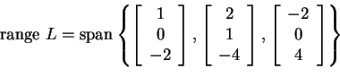
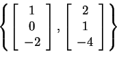
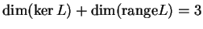
,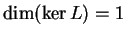
.
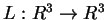
is a linear transformation and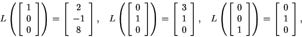
I have given you the image of the standard basis under L, so all you
have to do is write it down.
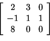
If A is similar to B, then
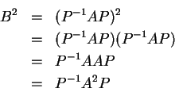
A common mistake was for students to write
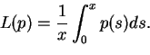
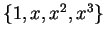
.
Here, we see that
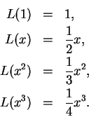
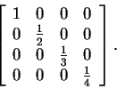
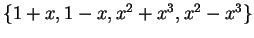
.
The most direct way to solve this problem is to use your solution from
the problem above and change coordinates to the new basis. The new
basis in standard coordinates is
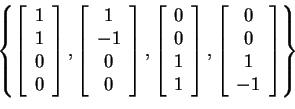
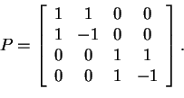
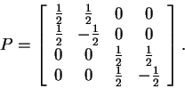
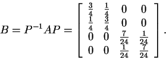
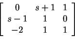
This is straightforward. A is invertible iff
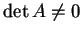
.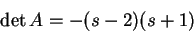
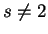
and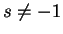
.
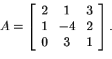
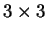
matrix, B, that has the property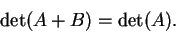
All sorts of things are possible with this problem. One approach is
to choose a matrix that corresponds to adding one row to another. We
know that this row operation does not alter the determinant. For
instance,
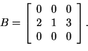
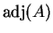
. Use this adjoint to compute A-1.
This is a direct calculation.
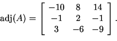
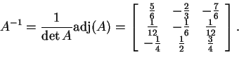